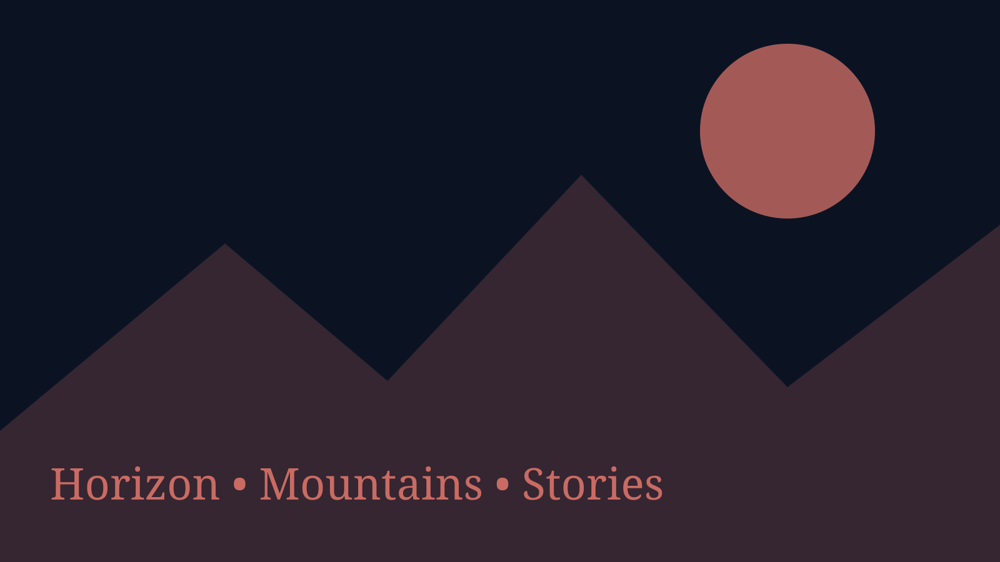

Field Notes 012026

Durango, Colorado • Somewhere outside
Stories, photographs, designs, and field notes from a life spent building strange ideas and taking the long road.
My Story
I am a designer, photographer, writer, traveler, and professional collector of projects. Most days happen somewhere between Durango and a forest road, with Horizon carrying everything I need.
This is the beginning of the story, not the whole thing. The longer version covers the roads, the reinventions, the difficult parts, and why I kept making things anyway.
Read the restPhotography
Recent photographs from mountains, roads, camps, weather, animals, and the quieter parts of the Southwest.


This year in numbers
Design
Brand systems, identity experiments, web concepts, logos, packaging, and the things that started as a rough note.


Notebook

The small roadside encounter that quietly became part of a much larger creative story.

What home looks like when it has four wheels, a worn map, and a changing view.

A notebook entry about design, unfinished projects, curiosity, and making things tangible.